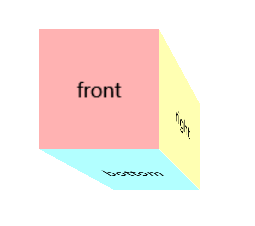

理解CSS中的透视
我以为在学习了透视投影以后就知道怎么使用CSS中的 perspective 属性了,然而我错了.
确实, OpenGL 透视和 CSS 中的透视概念上是一个东西,但在实际使用上两者还是有差别.
什么是透视
之前也有讲过透视(投影)符合人类人类直觉中的近大远小,就像下面这图,
Figure 1: 敢望路在远方(图片来源与网络)
这就是透视效果.
在人的眼中,路两边的线最终会在无限远处相交于某一点,
在绘画中,这一个点叫做灭点(vanishing point),这一个点之前的景色就是人所能看到的,超过了就看不到了,所以才叫灭点.
目前可以了解到,灭点和透视投影里面的视点(view point)有着根本区别: 灭点是观察者视线的终点,视点则是起点.
有一种叫做透视法的绘画技巧,它分一点透视,两点透视以及三点透视,这里的点就是做灭点.
这篇 perspective drawing tutorial 对透视画法介绍得很到位, 由于 OpenGL 里面的透视和 CSS 的透视都是一点透视,
因此我们只要了解一点透视法就可以了,这里稍微总结一下.
一点透视画法 最好 用于绘画那些正面观察者(viewer)的物体,具体操作如下:
首先在画布上选取一条水平线(horizon line),这条水平线叫做视线的水平高度(eye level),
如果观察者就在场景中的话,那么这条线相当于观察者的眼睛在场景中离地高度;
在这条线上选取一个点,这个点就是上面提到得灭点,这样就基本"确定"了观察者在场景中的位置了.
严格来说,灭点并没有真正确定观察者在场景中的位置,我们以画布作为一个平面,这个平面也就是投影平面,再在画布的中心上假设存在一条垂直的 \(Z\) 轴,
那么灭点只是确定了观察者在平面上的位置,以及观察者的视线方向(永远垂直于画布的Z轴),但是并不能确定观察者在 \(Z\) 轴方向上的位置,

Figure 2: 灭点和观察者
而视点(view point)则是完全确定了观察者在场景的位置,但没有确定视线方向;
最后从灭点出发画任意数量的直线,这些直线是辅助线(guide lines),或者叫透视线(perspective lines),再根据这些透视线绘制物体,
在透视线的帮助下可以营造出距离感,也就是近大远小的感觉.
任意两条透视线之间的夹角叫做视角(visual angle),当观察者离观察的物体越远,那么视角就越小
CSS 的透视
如果要在 CSS 里面 "玩3D",那么就得学习一下下面的 CSS 属性以及函数:
transform-style
perspective-origin
perspective
perspective()
backface-visibility
至于 transform 属性,就不再讲了,具体用法就参考我之前写过的 图形学-几何变换 和 transform 的文档.
玩 3D 时一般会先选定一个元素作为包含物体的空间,这个元素就是作为是上面提到的画布,不过接下来我会叫这个元素为空间元素.
这个空间可以是平面(2D 空间),可以是 3D 空间,而决定空间类型的 CSS 属性就是 transform-style.
值为 flat,空间元素就是 2D 空间;值为 preserve-3d,空间元素就是 3D 空间.
只有是 3D 空间时,里面的物体在做 3D 变换才有 3D 的效果,具体看看 MDN 的 transform-style 文档.
在继续学习前,要注意一点: CSS 所使用的坐标系和 OpenGL 的不一样.

Figure 3: CSS的使用的坐标系
两者大体上差不多的,只是相比 OpenGL 的坐标系, CSS 的坐标系 \(Y\) 轴变成向下,旋转方向依然是围绕原点从 \(X+\) 往 \(Y+\) 的方向旋转(这里是顺时针方向).
下面我们会以 transform-style: preserve-3d 为前提学习其他属性以及函数.
perspective-origin 就是设置空间元素的的灭点位置,默认值是 50% 50%,也就是位于空间元素的中心的点,
而 0% 0% 就是位于空间元素的左上角.

Figure 4: 一点透视法绘制多个物体(引用自 easydrawingtips.com)
可以把这图看做同一个物体相对于不同位置灭点时的视觉效果,它会帮助你理解灭点位置如何设置能达到你想要的效果.
单独设置 perspective-origin 是不会产生透视效果的,真正启用透视效果的是 perspective 属性 或者 perspective() 函数.
perspective 是作用于空间元素的,它是用来设置观察者与画布的距离.
当它的值是 none 时,就没有透视投影的效果,有的只是正交投影效果.
当它的值是0时,那么所有看到的内容都是在 2D 空间里面,换句话说就是所有应用于空间里的元素的透视变换都没法生效.
当它的值越小(\(perspective \gt 0\)),我们看到的内容就越歪曲;反之,扭曲就越小,但是过大会引起透视效果大打折扣.
它是这么影响的, \(perspective\) 越大也就是说观察者离物体越远,这个时候与物体的相关透视线的视角就越小,
举一个特例,那么像图中(灭点处于中心的情况)的距离 \(d\) 就越小,

Figure 5: 视角影响的距离 \(d\)
\(d\) 越小透视效果就越不明显,反过来,越大就越歪曲,因此 \(perspective\) 的大小要适中.
并非所有情况都是 \(perspective\) 越打,某某之间的距离 \(d\) 越小,有效情况是相反的,比如这个,
这里只是用特例来更直观地理解而已,是否歪曲是可以通过自己的眼睛来判断.
perspective() 是 transform 属性使用的一个函数,它也是启用透视效果的,和 perspective 属性不同在于:
perspective 属性是设置于空间元素并且空间里面的所有元素都有透视效果,空间内的所有元素共享一个灭点;
而 perspective() 则是给元素设置独立的透视效果,比方说在一个空间内,给每个物体进行了 perspective() 变换,那么每个物体会有自己独立的 3D 空间和灭点.
perspective 是应用于空间元素,而 perspective() 适用于空间元素里面的物体.
backface-visibility 指定是否隐藏物体的背面(back face),首先学会判断什么是背面.
这里有一个透明立方体,每一面都标识了它是哪一面,

Figure 6: 透明立方体
其中 back, left 和 top 都是立方体的背面,如果给这三个面设置 backface-visibility: hidden,
那么立方体就变成这样,

Figure 7: 隐藏了背面的透明立方体
就算把 front, right 和 bottom 面的 backface-visibility 的值也设置成 hidden,结果也是不会变的.
如果是要做成隐藏背面,那么最好就把所有面的 backface-visibility 设置为 hidden,这是以防给物体做变换时产生意外的效果,
比如立方体旋转了一圈,背面成为新的正面,原来的正面变成新的背面,而新背面又没有被隐藏.
你可以通过调试下面的例子的样式来试一下(用新的tab打开这个iframe):
结语
上面的内容个人不太确定是否完全正确,并且:
- 不确定是否在
CSS中通过同时对空间元素和空间里的物体使用 perspective/perspective() 来达到两点和三点透视的效果; - 还有很多透视相关的概念没有去了解过;
- 没有通过数学的层面去了解过透视;
这些就留给以后的我去解决了,目前先点到为止.